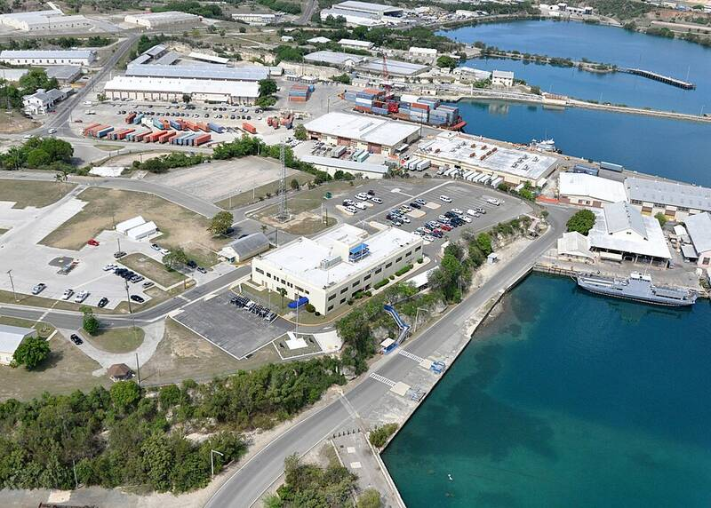

Naval Station Guantanamo Bay
Cuba

The oldest U.S. overseas naval base, leased from Cuba since 1903. 1
Open in the interactive Watcher
Sources
- Guantanamo Bay Naval Base Wikipedia
Cuba

The oldest U.S. overseas naval base, leased from Cuba since 1903. 1
Open in the interactive Watcher